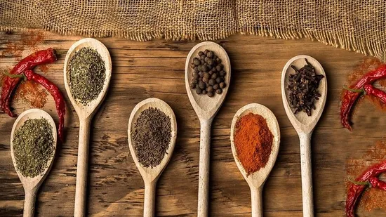

Spices are a storehouse of antioxidants and can help cut cholesterol boosting your overall well-being. Here are some common kitchen spices to help control cholesterol levels.
Too much bad cholesterol could play a havoc with your overall health and make you susceptible to multiple chronic diseases. Excess cholesterol gets accumulated as plaque on your artery walls putting you at risk of heart attack and many other chronic diseases like stroke, diabetes and high blood pressure. Once you find out that you have a high cholesterol through lipid profile, you should immediately introduce sustainable lifestyle changes that could aid in cutting cholesterol and help you in leading a healthy life. Cholesterol, however, isn't your enemy and HDL (high-density lipoprotein) is actually good for your health as it helps remove bad cholesterol or LDL (low-density lipoprotein) from your body. (Also read: 5 foods to boost good cholesterol levels)
Good thing is that you don't have to invest in fancy products to bring your cholesterol levels down and the good old Indian spices could help you to a large extent. Spices are the concentrated source of antioxidants that protect your body from damage and they are easily available in your kitchen. Apart from the health benefits, they also bring a distinct flavour to your food. "The right food has the power to cure any sort of ailment. The Indian kitchen is blessed with some of the best herbs and spices which have multiple medical and health benefits. Giving your body the right nutrition and a balanced diet inclusive of the essential nutrients can help you battle chronic diseases like cholesterol. Cholesterol can lead to heart disease if not looked after from the beginning. Adding some essential spices that are commonly found in our kitchens can help control cholesterol to a large extent. Enriched with the goodness of antioxidants, spices help in slowing down inflammation and tissue damage which are the outcomes of high blood sugar levels and circulating lipids," says Mehvish Khan, Nutritionist & Certified Diabetes Educator.